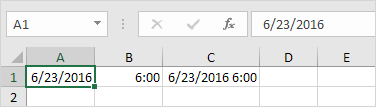
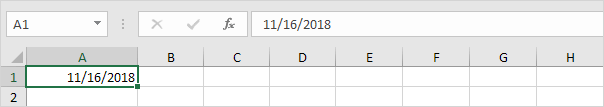

Fungsi Tanggal & Waktu
Tahun, Bulan, Hari | Fungsi Tanggal | Tanggal & Waktu Saat Ini | Jam, Menit, Detik | Fungsi Waktu
Untuk memasukkan tanggal di Excel, gunakan karakter "/" atau "-". Untuk memasukkan waktu, gunakan ":" (titik dua). Anda juga dapat memasukkan tanggal dan waktu dalam satu sel.

Catatan: Tanggal dalam Format AS. Bulan pertama, Hari kedua. Jenis format ini tergantung pada pengaturan regional windows Anda. Pelajari lebih lanjut tentang format Tanggal dan Waktu.
Tahun, Bulan, Hari (Year, Month, Day)
Untuk mendapatkan tahun dari suatu tanggal, gunakan fungsi YEAR.

Catatan: gunakan fungsi MONTH dan DAY untuk mendapatkan bulan dan hari dari suatu tanggal.
Fungsi Tanggal
-
Untuk menambahkan jumlah hari ke tanggal, gunakan rumus sederhana berikut.

-
Untuk menambahkan jumlah tahun, bulan dan/atau hari, gunakan fungsi TANGGAL.

Catatan: fungsi DATE menerima tiga argumen: tahun, bulan dan hari. Excel tahu bahwa 6 + 2 = 8 = Agustus memiliki 31 hari dan bergulir ke bulan berikutnya (23 Agustus + 9 hari = 1 September).
Tanggal & Waktu Saat Ini
Untuk mendapatkan tanggal dan waktu saat ini, gunakan fungsi SEKARANG.

Catatan: gunakan fungsi TODAY untuk memasukkan tanggal hari ini di Excel.
Jam, Menit, Detik (Hour, Minute, Second)
Untuk mengembalikan jam, gunakan fungsi HOUR.

Catatan: gunakan fungsi MINUTE dan SECOND untuk mengembalikan menit dan detik.
Fungsi Waktu
Untuk menambahkan jumlah jam, menit dan/atau detik, gunakan fungsi TIME.

Catatan: Excel menambahkan 2 jam, 10 + 1 = 11 menit dan 70 - 60 = 10 detik.
Format Tanggal dan Waktu
Tanggal dan waktu di Excel dapat ditampilkan dalam berbagai cara. Untuk menerapkan format Tanggal atau Waktu, jalankan langkah-langkah berikut.
1. Pilih sel A1.

2. Klik kanan, lalu klik Format Sel.
3. Dalam daftar Kategori, pilih Tanggal, lalu pilih format Tanggal.

4. Klik Oke.

Catatan: untuk menerapkan format Waktu, dalam daftar Kategori, pilih Waktu.
5. Tanggal disimpan sebagai angka di Excel dan menghitung jumlah hari sejak 0, Januari 1900. Waktu ditangani secara internal sebagai angka antara 0 dan 1. Untuk melihat ini dengan jelas, ubah format angka sel A1, B1 dan C1 ke Umum.

Catatan: ternyata, 42544 hari setelah 0, 1900 sama dengan 23 Juni 2016. 6:00 direpresentasikan sebagai 0,25 (seperempat sepanjang hari).
6. Anda dapat memasukkan waktu sebagai 6:00, tetapi Excel menampilkan waktu ini sebagai 6:00:00 di bilah rumus. AM digunakan untuk waktu malam dan pagi hari. PM digunakan untuk waktu pada sore dan malam hari.

7. Ubah format angka sel C1 menjadi Date only.

Catatan: sel C1 masih berisi angka 42544.25. Kami hanya mengubah tampilan nomor, bukan nomor itu sendiri.
Fungsi Tanggal hari ini (Today's Date)
Hari ini dan Sekarang | Tanggal dan Waktu Statis
Untuk memasukkan tanggal hari ini di Excel, gunakan fungsi TODAY. Untuk memasukkan tanggal dan waktu saat ini, gunakan fungsi NOW. Untuk memasukkan tanggal dan waktu saat ini sebagai nilai statis, gunakan pintasan keyboard.
Hari ini dan Sekarang (Today and Now)
-
Untuk memasukkan tanggal hari ini di Excel, gunakan fungsi TODAY.

Catatan: fungsi TODAY tidak membutuhkan argumen. Tanggal ini akan diperbarui secara otomatis saat Anda membuka buku kerja pada tanggal lain.
-
Untuk memasukkan tanggal dan waktu sekarang, gunakan fungsi NOW.

Catatan: fungsi NOW tidak membutuhkan argumen. Waktu ini akan diperbarui secara otomatis setiap kali lembar dihitung ulang. Ini terjadi saat Anda membuat perubahan ke sel mana pun atau saat Anda membuka buku kerja. Tekan F9 untuk menghitung ulang buku kerja secara manual.
-
Untuk memasukkan waktu saat ini saja, gunakan NOW()-TODAY() dan terapkan format waktu.

Catatan: tanggal disimpan sebagai angka di Excel dan menghitung jumlah hari sejak 0, Januari 1900. Waktu ditangani secara internal sebagai angka antara 0 dan 1. Kunjungi halaman kami tentang format tanggal dan waktu untuk informasi selengkapnya.
Tanggal dan Waktu Statis
-
Untuk memasukkan tanggal saat ini sebagai nilai statis, tekan Ctrl+; (titik koma).

Catatan: tanggal ini tidak akan berubah saat Anda membuka buku kerja pada tanggal lain.
-
Untuk memasukkan waktu saat ini sebagai nilai statis, tekan Ctrl+Shift+;(titik koma).

Catatan: waktu ini tidak akan berubah saat Anda membuat perubahan ke sel atau saat Anda membuka buku kerja.
-
Untuk memasukkan tanggal dan waktu saat ini sebagai nilai statis, cukup tekan Ctrl+; (titik koma), masukkan spasi dan tekan Ctrl+Shift+;(titik koma).